SEO: Guia Completo para Dominar o Google
O que é SEO, como funciona o algoritmo, os 4 pilares e a estratégia de Topic Cluster para dominar o Google.
Artigos práticos sobre tráfego pago, SEO e conversão escritos por quem executa estratégias reais de marketing digital todos os dias.
O que é SEO, como funciona o algoritmo, os 4 pilares e a estratégia de Topic Cluster para dominar o Google.
Entenda o que é SEO, como o Google decide quem aparece primeiro e por que é o canal com melhor ROI no longo prazo.
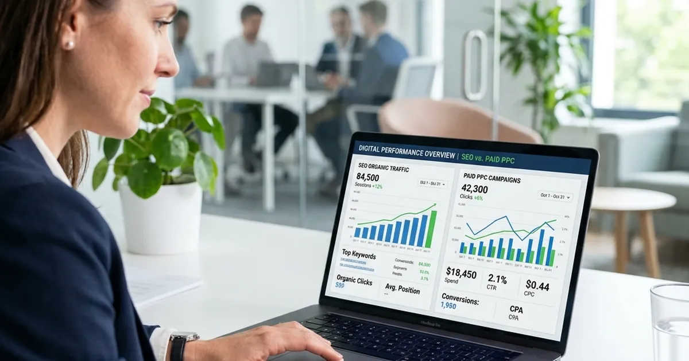
Como otimizar para o Google Maps, Google Meu Negócio e keywords locais para atrair clientes na sua região.
Guia passo a passo para indexar seu site, otimizar title e meta description e ranquear na primeira página.
Title tag, H1, URL, meta description, imagens, links internos — tudo que precisa estar certo dentro do seu site.
Como pesquisar keywords, avaliar volume e KD, e montar um plano que gera tráfego real para o seu site.

Como criar, verificar e otimizar o Google Business Profile para aparecer no Google Maps.
O que é link building, como conseguir backlinks de qualidade no Brasil e como construir autoridade de domínio.
Core Web Vitals, HTTPS, sitemap, robots.txt e schema markup — a base que o Google precisa para indexar bem.
Como atrair mais pacientes pelo Google com keywords por especialidade, E-E-A-T e blog clínico.
Como captar clientes jurídicos pelo Google dentro das normas do Provimento 205/2021 da OAB.
O que são LCP, INP e CLS, como medi-los e como corrigir para melhorar o ranqueamento.
Como configurar, analisar keywords, identificar erros de indexação e usar o GSC para crescer tráfego orgânico.

Como mapear intenção de busca, estruturar artigos para ranquear e atualizar conteúdo antigo com resultado.
Comparativo completo de ferramentas gratuitas e pagas: GSC, Ahrefs, Semrush e Screaming Frog.
Estratégias comprovadas para conseguir backlinks de qualidade: guest post, link bait e parcerias editoriais.
Como dentistas e clínicas odontológicas podem atrair mais pacientes pelo Google Maps e pela busca orgânica.
Páginas por empreendimento, blog imobiliário e SEO local para gerar leads qualificados organicamente.

Arquitetura de URLs, otimização de páginas de produto e categoria, schema Product e blog para lojas virtuais.
Como PMEs competem e vencem no Google usando keywords long tail, SEO local e conteúdo especializado.
Diferenças, riscos de penalização e o que realmente funciona para construir autoridade de forma sustentável.
Checklist completo: auditoria técnica, on-page, conteúdo e backlinks — com priorização de correções.
Tabela de preços por faixa, o que está incluído, como calcular o ROI e quando o SEO não vale a pena.
Tudo sobre landing page em um único guia: o que é, como criar, exemplos reais de alta conversão, ferramentas e estratégias usadas pela Intent Marketing.
Faixas de preço reais por tipo de site no Brasil, o que faz o valor variar, os custos recorrentes que ninguém conta e quando uma landing page basta.
Faixas de fee reais por escopo, a diferença entre verba de mídia e fee, e como saber se o investimento se paga.
As 12 perguntas para fazer antes de assinar e os 7 sinais de alerta de uma agência que vende ilusão.

SEO, Google Ads e landing pages para advocacia respeitando o Provimento 205 — com caso real de CPL −50%.
Matriz de decisão por tipo de negócio e o que 3 clientes reais fizeram com seu orçamento de marketing.
Entenda de uma vez o que é landing page, quais são os tipos, para que serve e por que ela converte muito mais que um site comum. Com exemplos práticos.
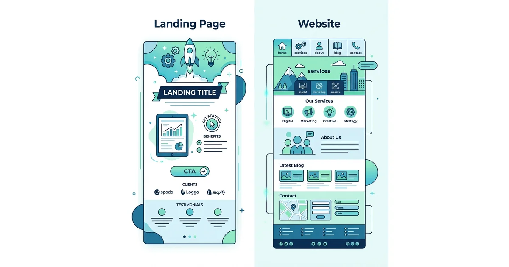
Entenda a diferença entre landing page e site institucional, quando usar cada um e como combinar os dois para maximizar resultados em campanhas digitais.
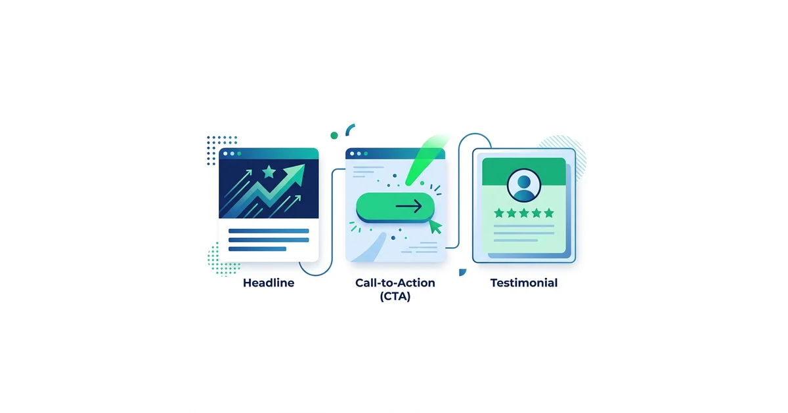
Descubra os 10 elementos obrigatórios de uma landing page de alta conversão com checklist completo e exemplos práticos para aumentar sua taxa de conversão.
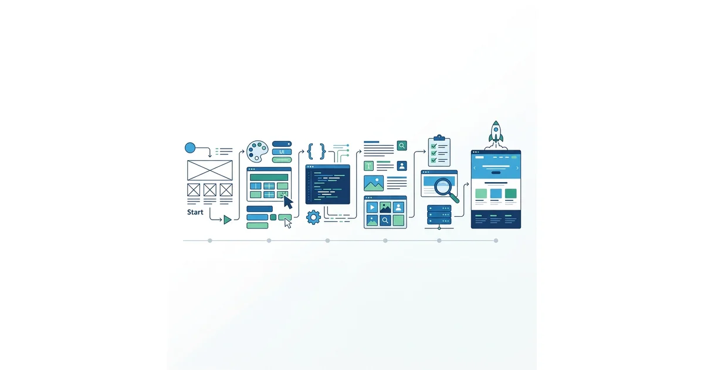
Aprenda como criar uma landing page do zero em 7 passos: planejamento, copy, design, ferramentas e configuração de rastreamento. Guia prático com e sem código.
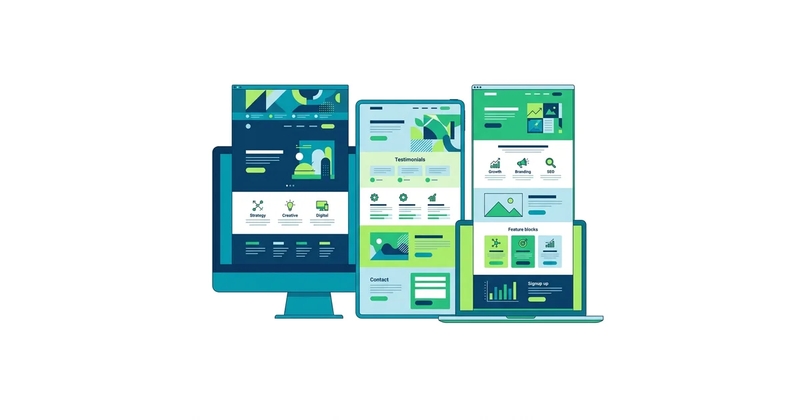
Veja exemplos reais de landing pages de alta conversão por nicho — clínicas, advogados, imobiliárias, SaaS e mais. Com análise dos elementos que fazem cada uma converter.

Aprenda a criar landing pages com inteligência artificial: as melhores ferramentas de IA para copy, design e otimização de conversão com exemplos práticos.
Aprenda as técnicas de copywriting para landing pages: como escrever headlines irresistíveis, CTAs que convertem e copy que transforma visitantes em clientes.
Aprenda como aumentar a taxa de conversão da sua landing page com técnicas comprovadas: testes A/B, otimização de CTA, velocidade e UX para mais resultados.
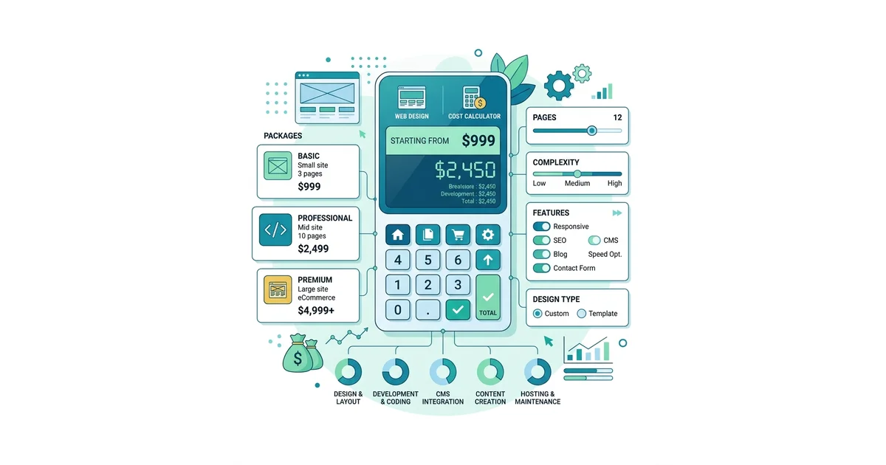
Descubra quanto custa uma landing page profissional no Brasil em 2026 — por faixa de investimento, o que está incluído e qual o ROI esperado para cada tipo.
Aprenda a criar landing pages para escritórios de advocacia que captam clientes dentro das normas da OAB. Estrutura, copy e exemplos para áreas de família, trabalhista e mais.
Aprenda a criar landing pages para clínicas médicas, odontológicas e de estética que convertem visitantes em pacientes. Estrutura, copy e exemplos práticos.
Aprenda a criar landing pages para imobiliárias e construtoras que geram leads qualificados de compradores e locatários. Estrutura, copy e estratégias para o mercado imobiliário.
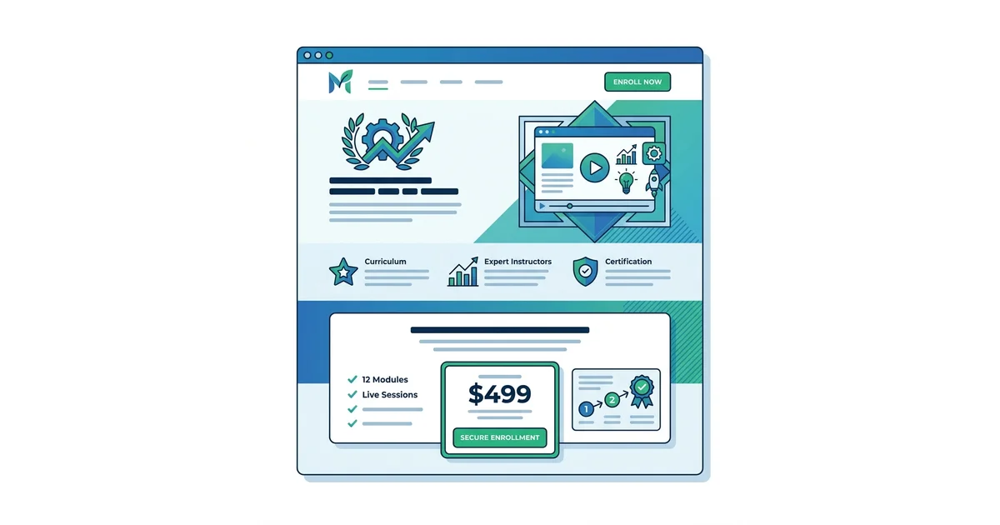
Aprenda a criar landing pages de alta conversão para cursos online e infoprodutos. Estrutura, copy, urgência e estratégias para maximizar as vendas do seu lançamento.
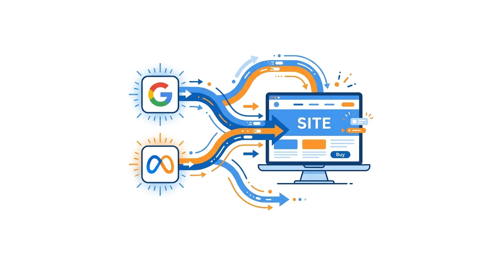
Tudo sobre tráfego pago: o que é, Google Ads, Meta Ads, quanto custa e como medir resultados.
Entenda o que é tráfego pago, como funciona e quando vale a pena investir. Guia para iniciantes.
O que faz um gestor de tráfego, quanto cobra e como contratar o profissional certo para seu negócio.
Diferenças, quando usar cada estratégia e como combinar SEO e Google Ads para maximizar resultados.
Leilão, índice de qualidade, tipos de campanha e como criar sua primeira campanha passo a passo.
Pesquisa, Display, Shopping, Performance Max e Vídeo: qual usar para cada objetivo de marketing.

Como recuperar visitantes que não converteram com remarketing segmentado e criativos estratégicos.
Tabela de CPC por nicho, orçamento mínimo recomendado e como calcular o ROI antes de investir.

Guia passo a passo: keywords, campanha, landing page, rastreamento e primeiras otimizações.
Compare as duas plataformas e saiba qual usar para maximizar o retorno do seu investimento.
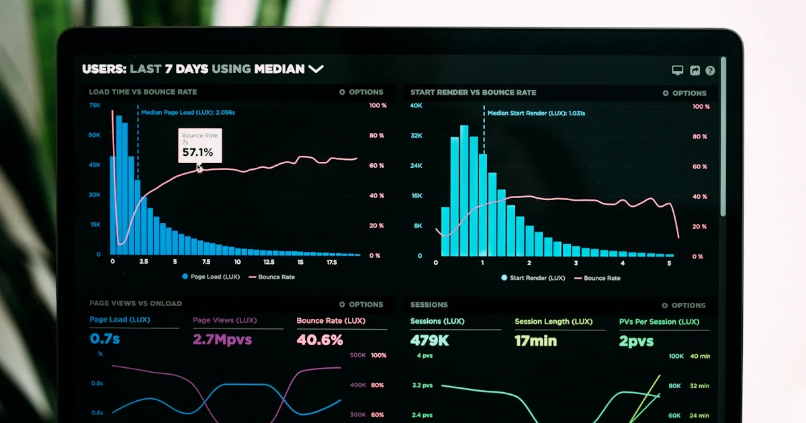
Métricas que importam: CPC, CPL, CPA, ROAS e como configurar rastreamento no GA4 e Meta Ads.
Como captar clientes com anúncios no Google dentro das normas da OAB. Keywords e orçamento.
Google Ads para clínicas médicas e odontológicas: keywords, orçamento e mais agendamentos.
Google Shopping, Performance Max e Meta Ads para escalar vendas online com estrutura de funil completa.
Facebook e Instagram para empresas — o que é, como funciona, públicos, criativos e resultados.
Entenda o que é Meta Ads, como funciona o sistema de anúncios do Facebook e Instagram.
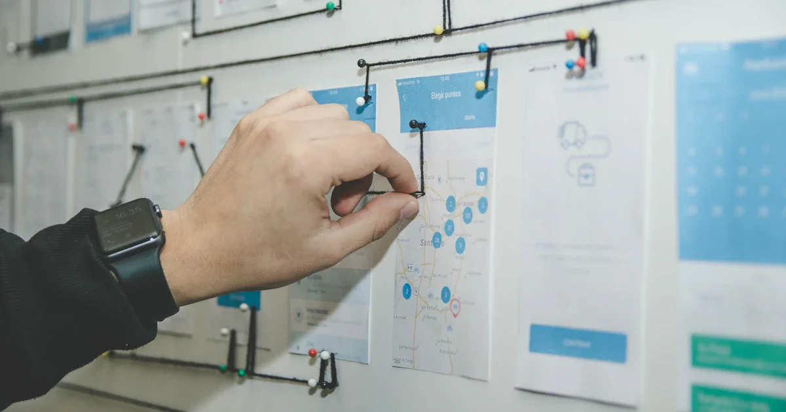
Guia completo do Gerenciador de Anúncios do Meta — do acesso à primeira campanha ativa.
O que é e como usar o Meta Business Suite para gerenciar Facebook, Instagram e anúncios.
O que é o Meta Pixel, como instalar, configurar eventos de conversão e usar a CAPI.

Personalizado, Lookalike e Advantage+: como criar e usar cada tipo de público.
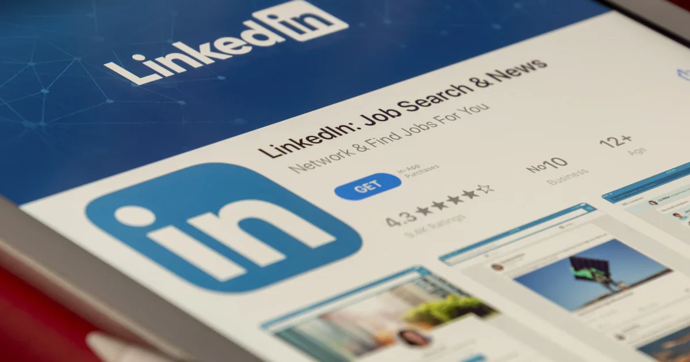
Formatos, tamanhos, copy e hooks que param o scroll — como criar anúncios de alta performance.
Como criar anúncios no Instagram, formatos, segmentação e estratégias para gerar resultados.

Como recuperar visitantes com retargeting no Facebook e Instagram — sequências e criativos.
Tabela de CPM, CPC e CPL por nicho, orçamento mínimo e cálculo de ROI antes de investir.
Catálogo, Advantage+ Shopping e retargeting de carrinho abandonado para lojas virtuais.
Como atrair pacientes pelo Instagram e Facebook com anúncios dentro das normas do CFM.
Estratégia completa de lançamento — CPL, aquecimento, carrinho e escala para infoprodutos.
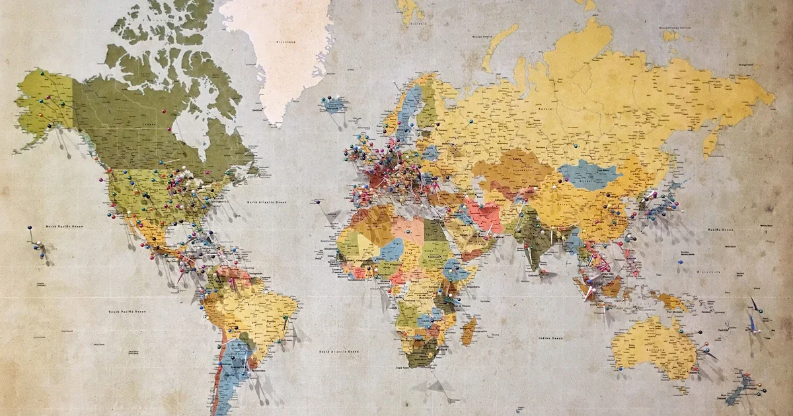
Como atrair clientes na sua cidade com segmentação geográfica e criativos autênticos.
Como organizar seu blog em páginas pilares e clusters de conteúdo para ranquear mais e reduzir a canibalização de palavras-chave.
Entenda o que é Generative Engine Optimization e as estratégias práticas para ser citado por ChatGPT, Gemini e AI Overviews.
Estratégias práticas para usar ferramentas de IA na produção de conteúdo e manter (ou conquistar) posições no Google em 2026.
Dados reais de campanhas gerenciadas pela Intent Marketing: ROAS 7× em confeitaria, CPL −50% em advocacia criminal e SEO local para mecânicas.